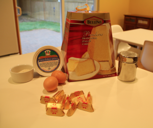
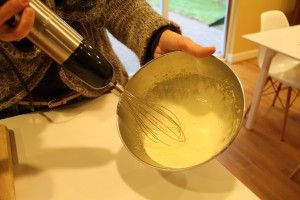
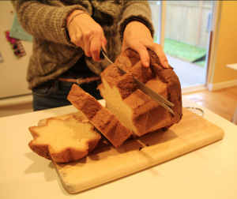
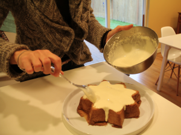
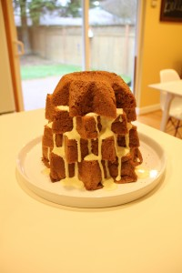
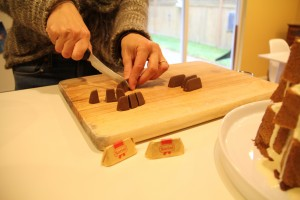
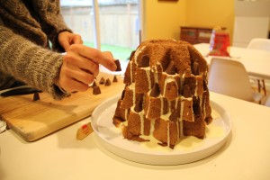
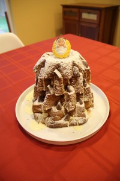

First beat the egg yolks with the sugar, then add the mascarpone cheese until you get a smooth cream. Set aside.
Cut the pandoro in 5 layers.
Spred the crema al mascarpone on each layer (the more liquid the better, it will make the cake softer).
Place each layer back, without matching the edges, in order to create a Christmas tree like shape.
I used Gianduiotti chocolate to decorate the cake, but you can use any other decoration, sometimes we even use small candles.

Finally, sprinkle the cake with powdered sugar and decorate the top with your favorite object (I "borrowed" baby Jesus from my kids' Fisher-Price nativity).
Enjoy it, Buon Natale!